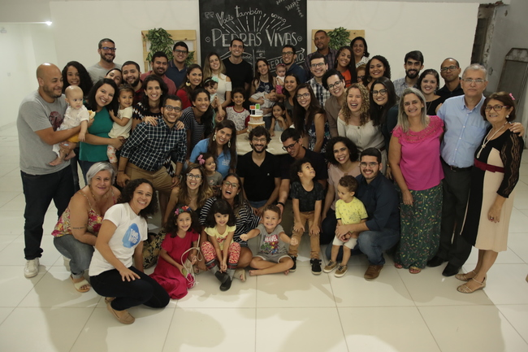

Oficiais
Pastores e Presbíteros (Conselho da igreja)
Presbíteros ou pastores são aqueles que foram chamados por Deus para liderar e ensinar na igreja. Tais homens devem ensinar e liderar principalmente dedicando-se à Palavra de Deus e à oração.
Rev. Sérvulo Silva - Pastor Titular
Sérvulo é casado com Thais, e tem três filhos: André, Darah e Hadassa. É o pastor titular e plantador da igreja. É formado em Teologia pelo Seminário Presbiteriano do Norte e pela Universidade Católica de Pernambuco (UNICAP).A Igreja Presbiteriana Pedras Vivas nasceu no seu coração em 2004, ainda quando estava no seminário. A vocação amadureceu, e após quatro anos servindo como pastor auxiliar em duas igreja diferentes, iniciou a plantação. A igreja foi oficialmente organizada em 2017.
Quando ele não está passando tempo com sua família ou servindo a sua igreja, você provavelmente vai encontrá-lo tomando café acompanhado de um bom livro.
Rev. Gustavo Cruz - Pastor Auxiliar
Gustavo é casado com Janaína, e tem um casal de filhos: Calebe e Marie. É pastor auxiliar da igreja e desenvolve seu ministério na área da música. É formado em Teologia pelo Seminário Presbiteriano do Norte e mestrando MDiv no Centro Presbiteriano de Pós-graduação Andrew Jumper (CPAJ) na área de Aconselhamento Bíblico.Quando ele não está passando tempo com sua família ou servindo a sua igreja, você provavelmente vai encontrá-lo tomando café acompanhado de um bom livro.
Presb. Bruno Anselmo
Bruno é casado com Clariza com quem tem três filhos: Lua, João e Rute. Está desde o começo da plantação da igreja, a qual ama e serve na área de ensino das crianças e na orientação aos pais. É formado em Teologia pelo Seminário Presbiteriano do Norte (SPN) e em Comunicação Social - Publicidade e Propaganda pela Universidade Federal de Pernambuco (UFPE). É mestre em Comunicação pela mesma instituição que se formou e doutorando em Comunicação na área de Consumo e Religião.Quando ele não está passando tempo com sua família ou servindo a sua igreja, você provavelmente vai encontrá-lo escrevendo sua tese.
Presb. Danyllo Andrade
Danyllo é casado com Amanda e tem uma filha, a Elis. Ele adora e serve como presbítero da Igreja Presbiteriana Pedras Vivas, onde dá atenção principalmente ao ensino na Escola da Vida. É Formado em Sistemas de Informação pela Universidade Federal Rural de Pernambuco (UFRPE) e pós-graduado em Teologia Sistemática pelo Seminário Presbiteriano do Norte (SPN).Quando ele não está passando tempo com sua família ou servindo a sua igreja, você provavelmente vai encontrá-lo tomando café acompanhado de um bom livro.
Diáconos
Os diáconos cumprem seu ministério sob a supervisão do Conselho e são chamados a executar os ministérios que tendem a desviar a atenção dos presbíteros do chamado dado por Deus para se dedicarem ao ministério da Palavra e à oração. Os diáconos são, portanto, responsáveis por administrar as preocupações benevolentes da igreja. São chamados a exercer o dom de misericórdia na igreja.
Diác. André Acioly
André é casado com Andressa e tem um casal, Hatus e Aurora. Dedica-se ao ministério diaconal da igreja, a qual serve desde o começo da plantação. É formado em Educação Física pela Universidade Federal de Pernambuco (UFPE) e seminarista da igreja no Seminário Presbiteriano do Norte (SPN).Quando ele não está passando tempo com sua família ou servindo a sua igreja, você provavelmente vai encontrá-lo treinando atletas do treinamento multifuncional.